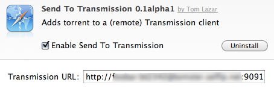

A Safari extension to add a torrent via right-click to a (remote) Transmission instance
SendToTransmission is an extension for the Safari Browser (version 5 and up) that adds a command Send to Transmission to the context menu you get when right-clicking on a URL on a web page.
Selecting that command will send the torrent to a (remote, see below) instance of a Transmission bit torrent client (version 2 and up). Transmission will then download that torrent for you and start it automatically.
But why go through all this trouble of installing (let alone writing!) an extension, if you already can simply download a torrent file with one click and Transmission can automatically start downloading that? Well, the answer is, that this only works, if Transmission is running locally. However, if you run Transmission on another machine, e.g. your router, a Mac Mini connected via DynDNS or the bare daemon on a *NIX box somewhere, adding a new torrent is a bit cumbersome: download it first in Safari, then switch to Transmission's web interface, add a new torrent and upload the file you just downloaded. If you do this fairly often (as I do) you might appreciate the one-click convenience of this extension :-)
Once you've installed the extension, if you go to Safari's preferences and there click on the 'Extensions' tab, you should see an entry for 'Send to Transmission'. Clicking on that will allow you to change the URL of the (somewhat non-sensical) localhost default to that of a remote machine.

This is the first version of my first Safari extension. It's not even beta. It works fine for me™, consider yourself lucky, if it does for you, too :) If not, open a issue at github and I'll take a look, thanks for caring!
The easiest way is to download the latest pre-built package from github. Download it, double-click it, presto!
Note: If you have downloaded the very first version (alpha 1) you will need to uninstall that, then download and install the current version. Future updates will then be handled within Safari.
If you want to install from source, you will need to follow these instructions from the Apple Developer Connection.
Authentication (you did activate authentication for your remotely reachable Transmission instance, right?!) is currently only supported by the http://USERNAME:PASSWORD @hostname.tld:9091 schema. A future update might add proper support for authentication. Buy me a beer and I'll look into it :)